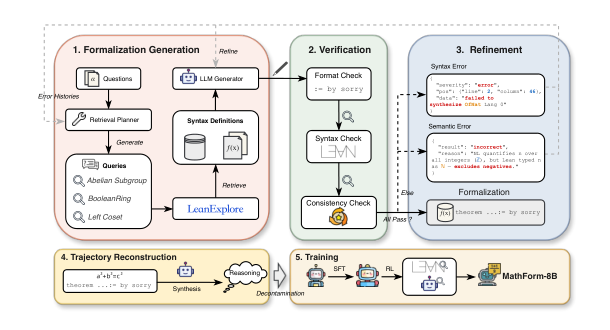

Builds a 367K-example Lean 4 autoformalization dataset via Mathlib retrieval and verification-guided refinement, training MathForm-8B evaluated on six Lean benchmarks.
Abstract
Autoformalization is commonly framed as translating natural-language mathematical statements into machine-verifiable formal languages such as Lean 4. However, faithful formalization requires more than translation. Models must map mathematical concepts to the complex hierarchy of types and definitions in formal libraries such as Mathlib, while ensuring that generated statements preserve the meaning of the source propositions. Existing approaches struggle because they rely heavily on the model's parametric memory for library-specific knowledge, while common data construction pipelines often resort to filtering single-pass outputs and lack mechanisms for feedback-driven revision. To address these challenges, we introduce MathForm, an autoformalization framework for constructing verified training data through Mathlib knowledge retrieval and verification-guided iterative refinement. Before generation, a retrieval planner gathers relevant definitions and existing formalizations from Mathlib to guide the formalization generator. Generated statements are then revised using compiler diagnostics and semantic-consistency feedback. Using this framework, we construct FormalVerse, a Lean 4 dataset containing approximately 367K verified examples across diverse mathematical domains and sources. We then train MathForm-8B through supervised fine-tuning followed by reinforcement learning. Across six benchmarks, MathForm-8B achieves average Pass@8 rates of 88.06% under Syntax Check (SC) and 72.37% under Consistency Check (CC), outperforming multiple specialized 32B autoformalizers. On the challenging FATE-H and FATE-X subsets, it attains CC pass rates of 63% and 37%, exceeding the strongest specialized baselines in both cases.
Problem
Autoformalization requires mapping natural-language mathematics into Lean 4 while respecting Mathlib's type hierarchy and definitions. Existing methods rely on parametric memory for library-specific knowledge and use best-of-N filtering that lacks feedback-driven revision.
Approach
MathForm is a data-construction framework where a retrieval planner gathers relevant Mathlib definitions and existing formalizations to guide a generator. Generated Lean 4 statements are then revised iteratively using compiler diagnostics and semantic-consistency feedback. The resulting FormalVerse dataset ( 367K verified examples) is used to train MathForm-8B via supervised fine-tuning followed by DAPO reinforcement learning.

Figure 2: Overview of the MathForm data construction and training pipeline. The system combines Mathlib knowledge retrieval, compilation and semantic verification, and iterative refinement to generate reliable formal data, followed by trajectory reconstruction and training of MathForm -8B.
Results
MathForm-8B achieves average Pass@8 rates of 88.06% (Syntax Check) and 72.37% (Consistency Check) across six benchmarks, outperforming multiple specialized 32B autoformalizers. On FATE-H and FATE-X it reaches CC pass rates of 63% and 37%.
Model
AVG SC
AVG CC
FATE-H CC
FATE-X CC
ReForm-32B
81.61
68.41
52.00
25.00
Goedel-Formalizer-V2-32B
78.28
63.74
48.00
13.00
MathForm-8B-SFT
84.38
66.53
58.00
25.00
MathForm-8B
88.06
72.37
63.00
37.00
Pass@8 pass rates (%) under Syntax Check (SC) and Consistency Check (CC), macro-average and challenging FATE subsets